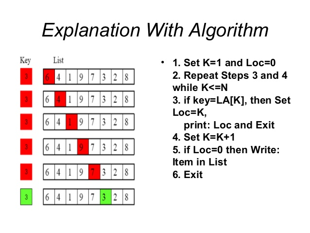

Linear search
When no information is given about data, we proceed sequentially using a step by step
approach called linear search.
It can be applied when the given data set is sorted or unsorted.
Under linear search a search is terminated when;
- When the element is found
- When a data set is searched and the element being searched for is not found.
An unsorted Array
This refers to an array in which the integers are given without
a defined sequence and therefore we decide if a given element x
is in array A by searching through each given element in the array.
We return true in case the element is found and false
in case its not found in the array.
Sorted Array
This is one in which the elements of the array are arranged in a finite sequence i.e ascending or descending order. The time complexity for a sorted array algorithm is O(1). This is because in the worst case we need to scan the complete array. But in the average case it reduces the complexity even though the growth rate is the same. The space complexity is O(1).
The example below illustrates the use of linear search to find the "3" in an unsorted list.
